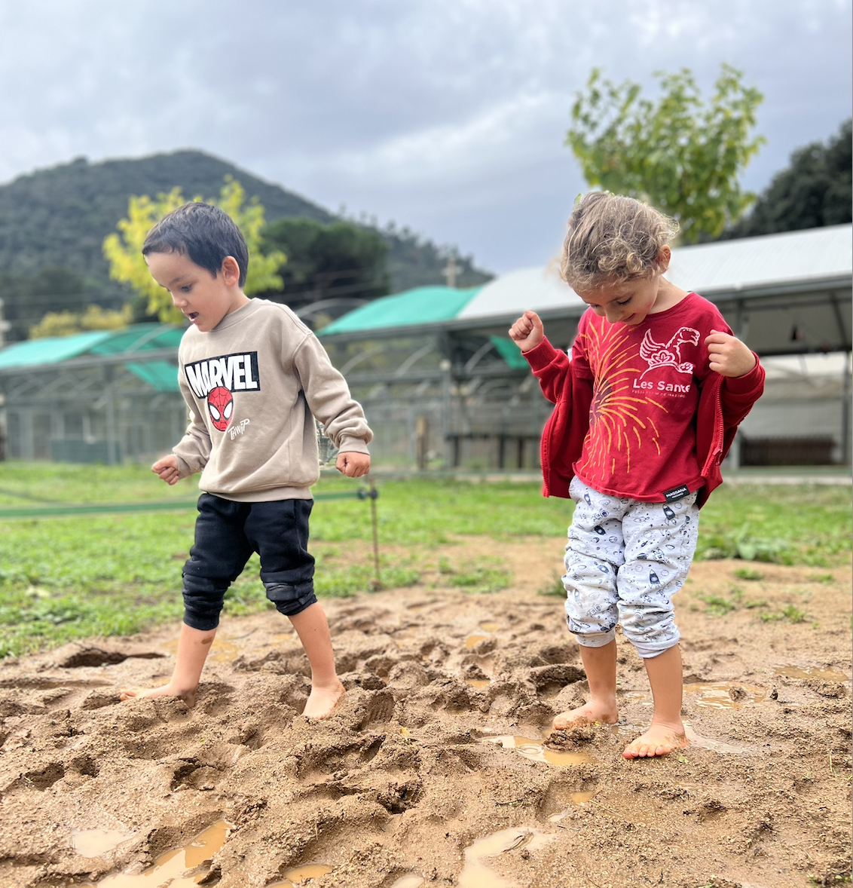
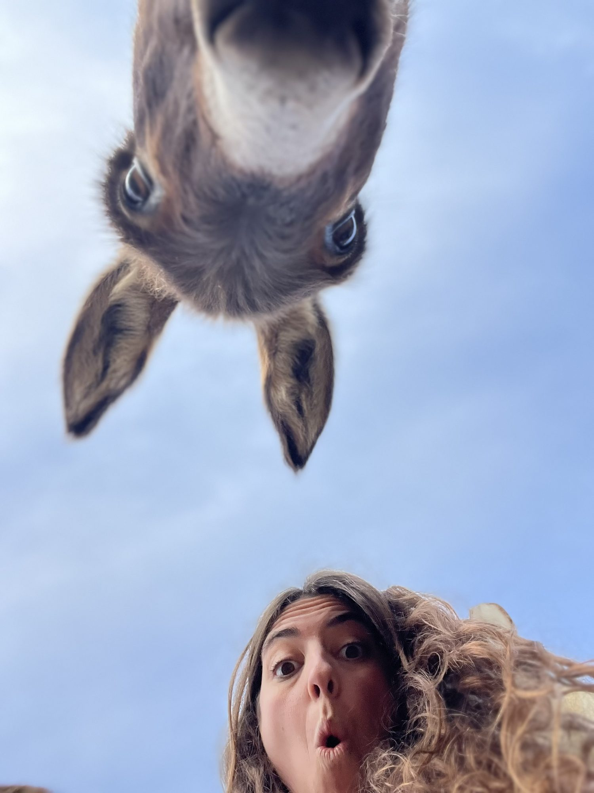
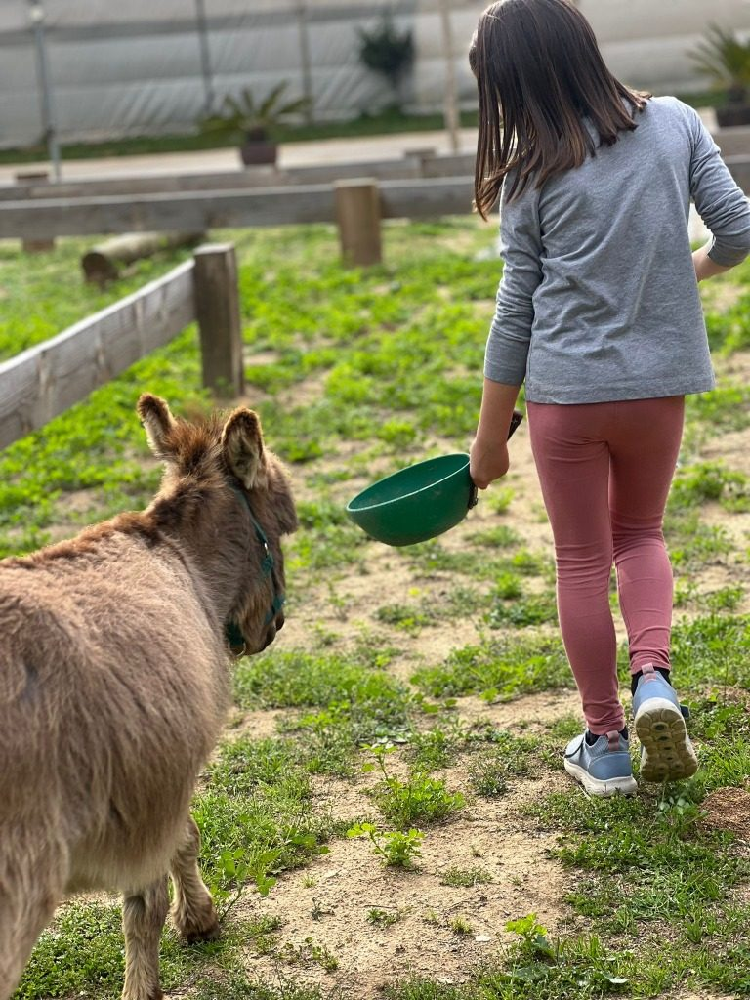
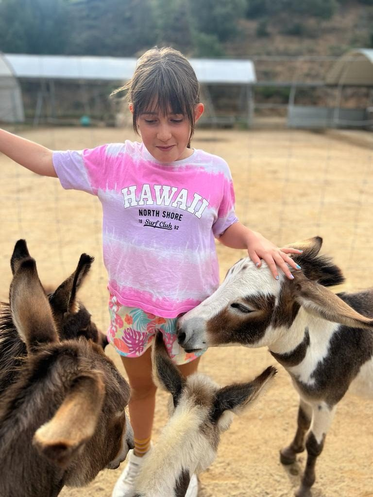
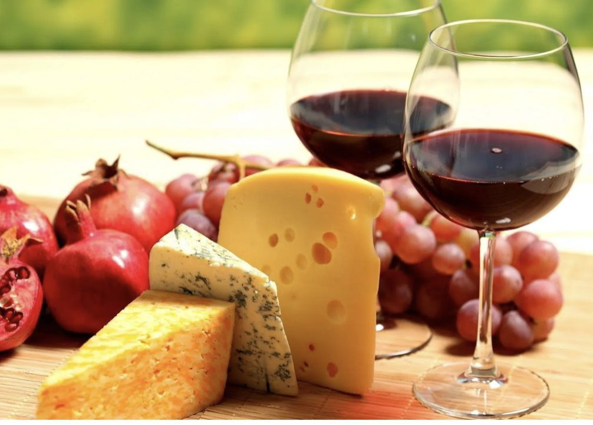
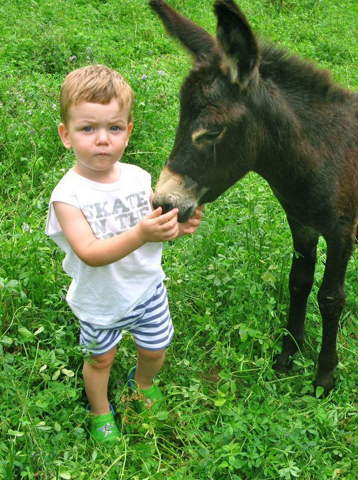
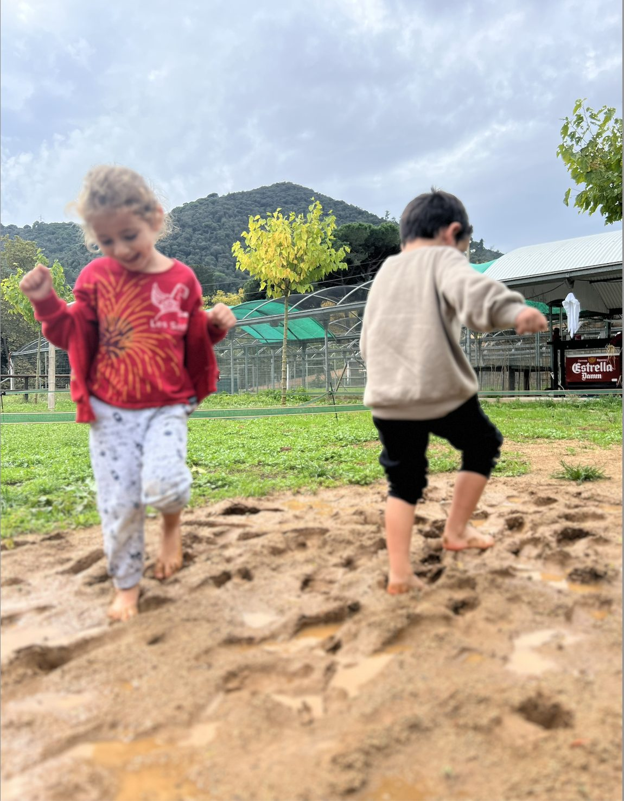
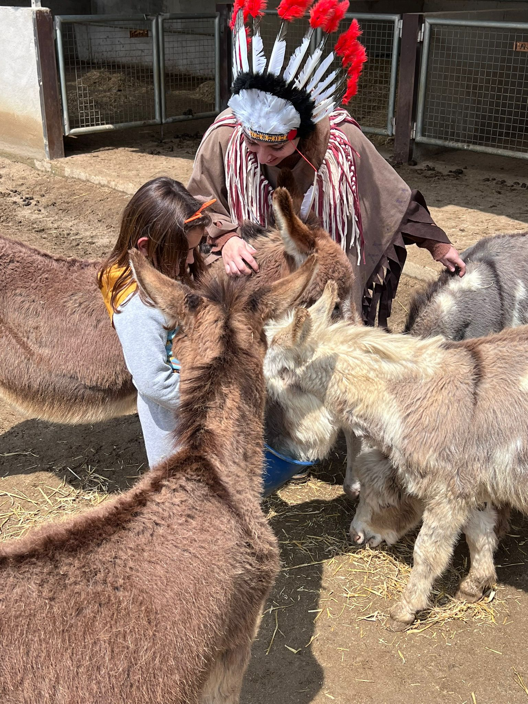

Can Ferrer · Arenys de Munt
Ein Zufluchtsort, der der menschlichen Verbindung mit dem Miniaturesel gewidmet ist. Ein Raum, in dem die Zeit stehen bleibt, um Stress abzubauen und durch tierische Sanftmut zur Ruhe zu finden.
Can Ferrer
Wir fördern den freien Ausdruck und die Freude in einem pädagogischen Kontext, in dem jedes Lachen Teil des Lernens ist.
Wir schärfen das Bewusstsein für die Bedeutung von Vielfalt und gegenseitigem Respekt für eine gerechtere Gesellschaft.
Wir stärken die Autonomie und kognitiven Fähigkeiten durch Routinen und positive Verstärkung.
Wir schaffen Unterstützungsnetzwerke und vorurteilsfreie Räume und verstehen Wohlbefinden als gemeinsames Gut.
El Petit Refugi

Eine magische 1h 15min Tour, bei der Groß und Klein mehr über die Ernährung, Pflege und Geschichte lernen.
Entdecken →
Stimuliert die Sinne und fördert Ruhe, Selbstwahrnehmung und emotionales Wohlbefinden.
Entdecken →
Natur und tierische Sanftmut als Protagonisten eines unvergesslichen Geburtstages.
Entdecken →
Privatsphäre, exklusive Interaktion mit den Eseln und Verkostung lokaler Gourmetprodukte.
Entdecken →Buchen Sie noch heute Ihren Besuch und entdecken Sie, warum der Miniaturesel der beste Verbündete für das Wohlbefinden ist.

Galerie


Besuchen Sie uns
Carretera de Lourdes (C/ Subirans) · Arenys de Munt, Barcelona
Jetzt reservieren